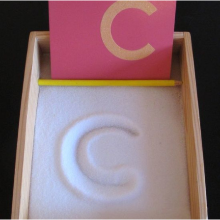
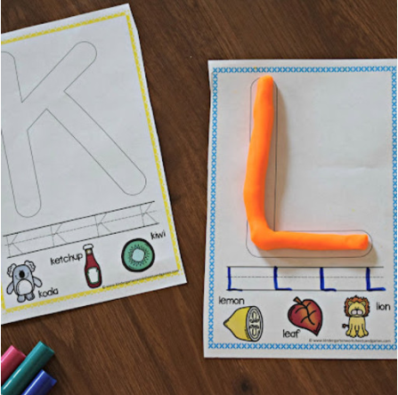

Fun Activities to Develop Pre-Writing Skills
Published on Nov 29, 2021
When children start school, they will use writing in all learning areas and be expected to write neatly and on a line. This can be very challenging for many children, however, there are lots of things you can do to build your child’s hand strength and teach them letter formation early. This will help them find the action of writing easier. The two main areas to focus on are hand strength and letter formation.
Hand Strength
When you were little, you probably spent a lot of time outside in a park, in nature, or inside playing with blocks or simply a pen and paper. Nowadays, children do not have the same experiences as we did where our fine motor skills were being developed early, because we were picking up leaves or sticks in the park.
The importance of children using their hands to pick things up, move things around, pinch things, bend things is incredibly important to develop hand strength, which is significant when it comes to writing. Here are some simple things you can get your child to do at home to build their hand strength:
- Use a peg to hang the washing – the pinching of the peg is a skill that takes time to master and requires significant hand strength for a small child.
- Use blocks to build a tower – placing one block on top of the other requires coordination and balance. As the tower gets higher, the child must be more precise and gentler with the blocks.
- Put raw spaghetti through a colander – raw spaghetti is fragile and therefore requires children to be gentle with their hands, and placing the spaghetti through a small hole develops hand control and hand-eye coordination.
- Go to the park with a bucket – collecting sticks, leaves, rocks and placing them in the bucket develops hand strength carrying the bucket as it gets heavier, fine motor skills to pick something up, and hand-eye coordination to place the item in the bucket.
- Play dough – a great way to build hand strength with squishing and rolling etc.
- Children’s tweezers – using children’s tweezers to pick anything up e.g. pom poms.
Letter Formation
In this context, I do not mean the formation of letters on a written piece of paper. Small children need to start by using their hands to make the shapes of letters for example circles, lines, zigzags, before they move to actual letter formations. When they get to the point where they are ready for the correct letter formation, they need to start by doing the letters big and in different contexts. Including sensory and tactile activities make the activities super engaging and enjoyable. Here are some simple ideas you can get your child to do at home to build their letter formation:
- Using their finger, a stick, chopstick, skewer, or the end of a paintbrush in the sand to make shapes or letters. Use the sand at the beach, in a sandbox, or put sand in a tray.
- Using their finger, a stick, chopstick, skewer, or the end of a paintbrush in shaving cream to make shapes or letters. You can spray shaving cream on a tray.
- Using stones or pebbles to lay over a shape or letter.
- Using paint to paint shapes or letters.
- Using your back and getting your child to use their finger to write shapes or letters on your back.
- Using the play dough to make shapes and letters.


Find more ideas for interactive fun activities Razum International School Blog.
Find out more about Razum International School BOOK A PRIVATE TOUR.


Contact Infor
Detech Tower 8 Tôn Thất Thuyết, Nam từ liêm, Hà Nội
+841 2345 9999Write to us
SchoolsInfor.com
Newsletter
Sign up for our newsletter to get the latest news and updates on schools.